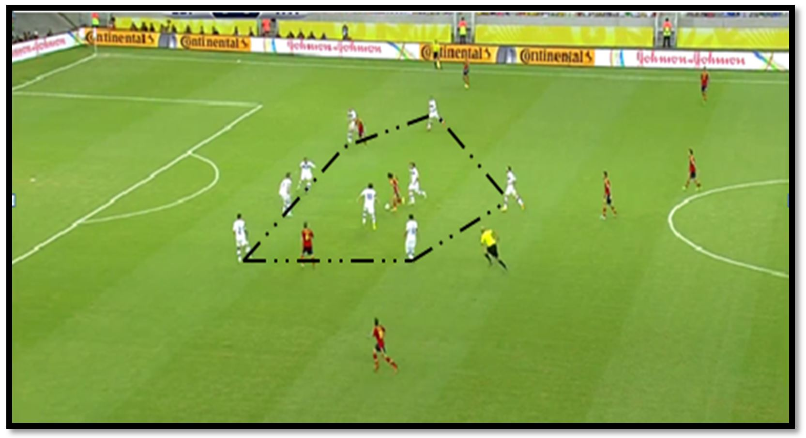

Defendiendo el Marcador
Decides jugar con una estrategia defensiva. Te replegas y esperas el contraataque.
Opciones de juego
Aprovechar un contraataque
Cerrar espacios y aguantar el resultado
Cometer un error defensivo

La línea defensiva se mantiene firme ante el ataque rival.